1¢ Benjamin Franklin, Series of 1902
Scott 300 · on 11 cards

Blue-green, engraved; issued in 1903. Franklin between allegorical figures in an ornate frame, with 'Series 1902' at the top. One cent was the postcard rate.
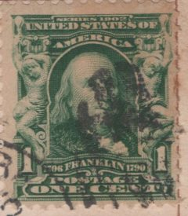
1. November 15, 1904unsigned sender
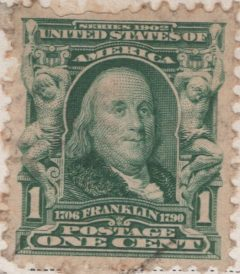
2. June 12, 1905Martha
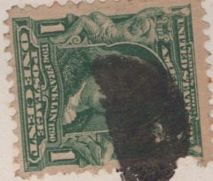
4. August 28, 1906Bill
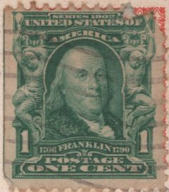
6. January 28, 1907unsigned sender
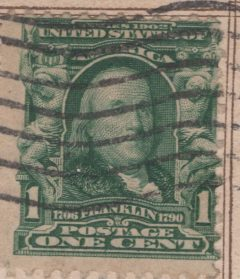
7. April 7, 1907unsigned sender
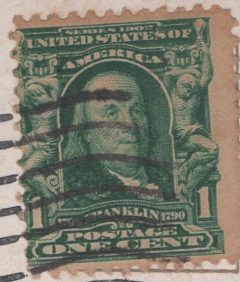
9. September 16, 1907Miss Schl[?]f
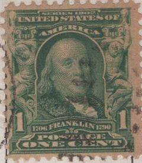
10. 1908unsigned sender
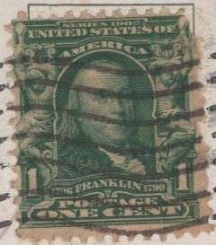
11. September 17, 1908[Ruth?]
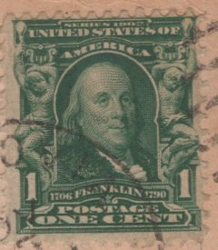
12. November 25, 1908unknown sender (signature cut off)
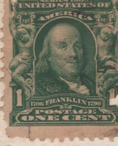
13. December 22, 1908unknown sender (perhaps Rachel)
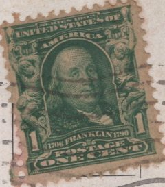
14. December 23, 1908cousin Eleanor
1¢ Benjamin Franklin, Washington–Franklin issue of 1908
Scott 331; 374 from 1910 · on 40 cards

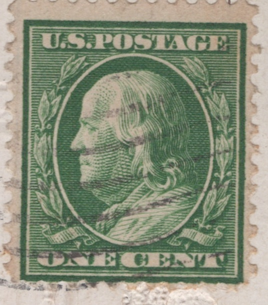
Green; Franklin's profile after Houdon's bust, in an oval wreath, with the value spelled out, ONE CENT. The 1908 printings and the 1910 ones on single-line watermarked paper look alike on a card.
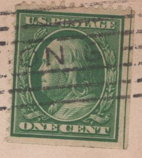
15. February 13, 1909Alfred W. S.
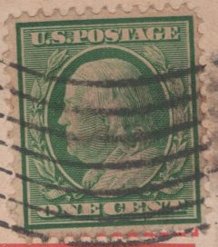
17. June 16, 1909K.
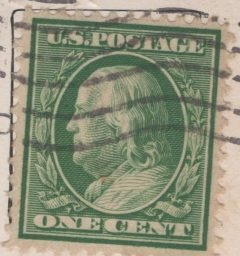
19. October 4, 1909unsigned sender
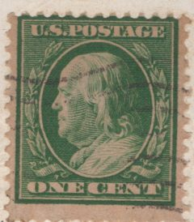
20. November 24, 1909Andw. [?] (Your friend)
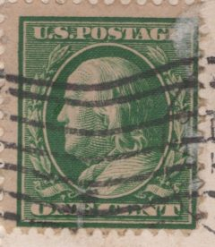
21. December 24, 1909Alfred
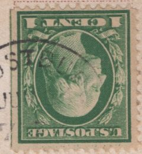
44. 1910M. N. C.
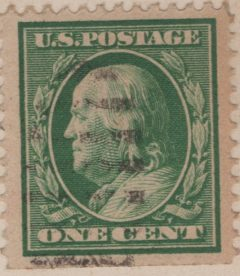
45. February 1910unknown sender (unsigned)
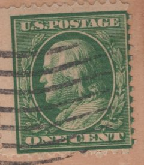
47. February 11, 1910unknown sender (unsigned)
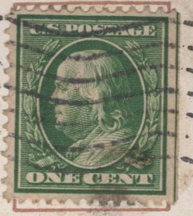
48. June 6, 1910R.P.
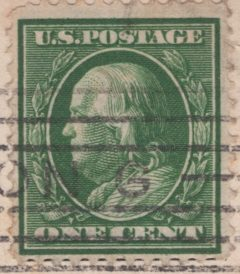
49. July 15, 1910Maybelle
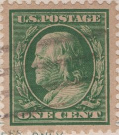
50. July 24, 1910Louise
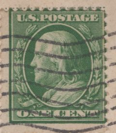
51. August 21, 1910Ele[?] (signature cut off at card edge)
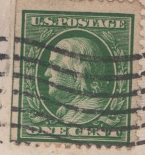
52. September 4, 1910Lilian
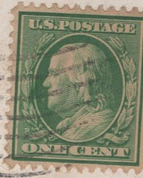
53. September 18, 1910Maybelle
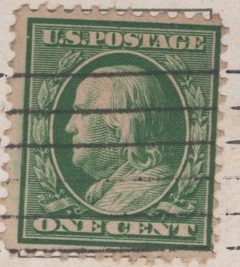
58. December 23, 1910Louise Berliner
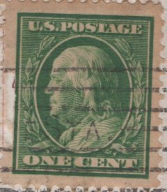
61. December 24, 1910Eats63. December 25, 1910
Maybelle
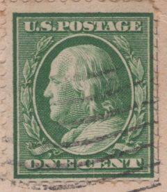
64. December 25, 1910L. L. W.
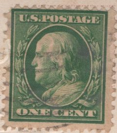
66. December 31, 1910Maybelle M. Weber
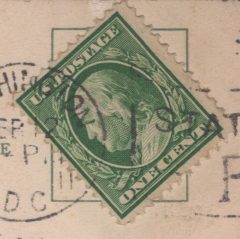
68. February 1911Margaret Jetmore
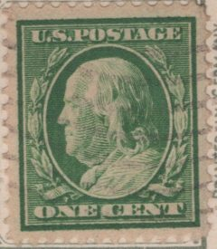
70. April 13, 1911Lilian L. Webb
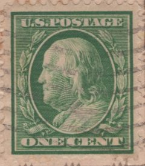
71. April 13, 1911Maybelle W.
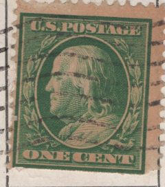
73. July 2, 1911unknown sender
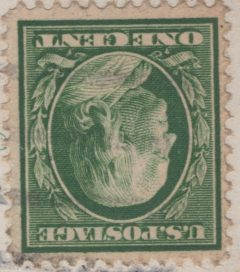
74. July 13, 1911Marie
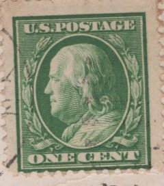
75. July 27, 1911R. P.
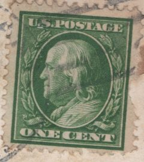
76. July 28, 1911unknown sender (probably Lilian L. Webb)
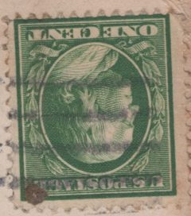
77. August 1911E + G.
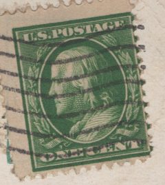
78. August 1911Papa
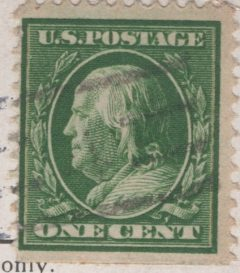
79. August 21, 1911L L W
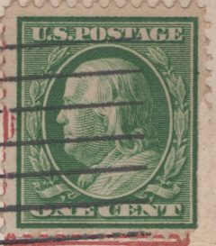
80. September 9, 1911Papa
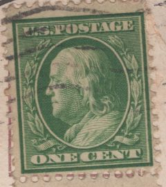
81. September 20, 1911Bob
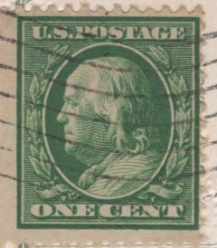
82. December 19, 1911Katharine Cruse[?]
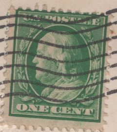
83. December 24, 1911E. M. Edwards
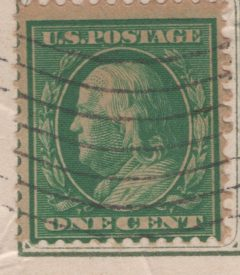
84. December 30, 1911Mabelle
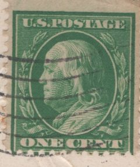
85. December 30, 1911L. L. W.
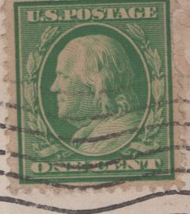
86. February 21, 1912unknown sender (signature not visible)
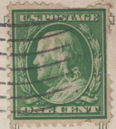
88. June 24, 1912L. L. W.
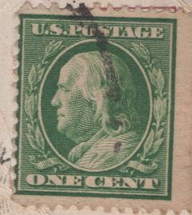
91. September 1912Dot
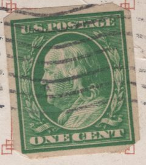
102. March 28, 1913Billy162. January 1917
M[?] (signature cut off)
1¢ George Washington, 1912 design
Scott 405 and later printings · on 87 cards

Green; from 1912 the one-cent stamp shows Washington with the value in figures, 1 CENT 1 (Franklin moved to the higher values). Printed until the 1920s in several perforations and coils, which are not told apart here.
Lucy24. 1910
B.H.25. 1910
W. Bande [?]33. 1910
Harriet42. 1910
C.55. December 1910
Jane59. December 23, 1910
Maybelle60. December 23, 1910
M. E. Ward62. December 24, 1910
Ethel B.65. December 28, 1910
Charlie87. June 24, 1912
Katharine89. July 26, 1912
two travellers (signature unclear, '[?] & K[?]')90. September 1912
Chas.92. September 2, 1912
Maybelle Webb94. December 21, 1912
L. L. W.95. December 23, 1912
Dot96. December 30, 1912
[W. Bander?]97. 1913
[?]. B.98. March 6, 1913
Mary99. March 21, 1913
Dot100. March 21, 1913
Maybelle101. March 28, 1913
Dorothy103. April 15, 1913
Mary G.104. May 27, 1913
Bill105. May 27, 1913
Billy106. June 1913
L. L. W.107. July 1913
Mary G.108. July 5, 1913
unknown sender (signature cut off)110. August 12, 1913
Margaret111. August 13, 1913
Margaret112. August 13, 1913
unknown sender (signature illegible)113. September 6, 1913
[Mamma?] (signature unclear)114. October 12, 1913
D. Kranbuhl[?]116. November 3, 1913
Dorothy B[?]117. November 17, 1913
Fred's sister (signature cut off)118. December 22, 1913
[Abbie?]119. December 24, 1913
Margaret Jetmore120. December 24, 1913
L. L. W.121. December 29, 1913
M[a]c124. 1914
M. S. B.125. June 6, 1914
George126. June 28, 1914
Mother127. August 30, 1914
"Moby"128. September 7, 1914
an unidentified friend (initials only)129. October 19, 1914
Fred's sister (signature lost)131. February 16, 1915
M. Bisset132. May 1915
unknown sender at 1421 Aqueduct Ave., New York (unsigned)133. June 1915
Bettie [?]134. July 14, 1915
L. E. Burlingame135. August 11, 1915
Dick [?]136. September 5, 1915
Anita137. December 25, 1915
E. H. F. [?]138. February 14, 1916
Margaret Jetmore139. February 15, 1916
Mother140. February 21, 1916
Mother141. March 1916
Mother142. April 22, 1916
an unsigned sender (Garrett Park, Md.)144. June 1916
Father145. July 19, 1916
an unsigned sender146. August 1916
Kath[?] (probably Katharine, Fred's sister)147. August 14, 1916
Elvah [?]148. August 19, 1916
Chiquita149. August 23, 1916
El.150. August 23, 1916
Grace & Murph [?]151. August 25, 1916
J. S. B. [?]152. August 29, 1916
an unidentified friend (signature lost)153. November 21, 1916
Mildred154. November 24, 1916
an unsigned friend (perhaps initial C)155. December 1916
Helen156. December 1916
Margaret (with a line from Ethel)157. December 1916
Jim158. December 21, 1916
Margaret Jetmore159. December 22, 1916
"V. F."160. December 24, 1916
M. B.161. December 26, 1916
an unidentified Cornell friend (signature lost)163. January 1917
Dorothy [?]164. February 1917
S.165. March 26, 1917
unknown sender (signature illegible)166. April 6, 1917
"X."167. April 24, 1917
an unidentified friend (initials only)168. June 1, 1917
M. L. W. [?]169. July 1, 1917
Elwah170. July 2, 1917
Elwah171. July 10, 1917
an unsigned family member (Kensington, Md.)172. August 25, 1917
Bettie [?]173. September 1917
Helen174. September 4, 1917
Elizabeth
2¢ George Washington, 1912 design
Scott 406 and later printings · on 3 cards

No stamp
41 cards
No stamp: never mailed, sent in an envelope, a printed 'place stamp here' box, or the stamp is gone.
3, 5, 8, 16, 18, 23, 26, 27, 28, 29, 30, 31, 32, 34, 35, 36, 37, 38, 39, 40, 41, 43, 46, 54, 56, 57, 67, 69, 72, 93, 109, 115, 122, 123, 130, 143, 175, 176, 178, 181, 182